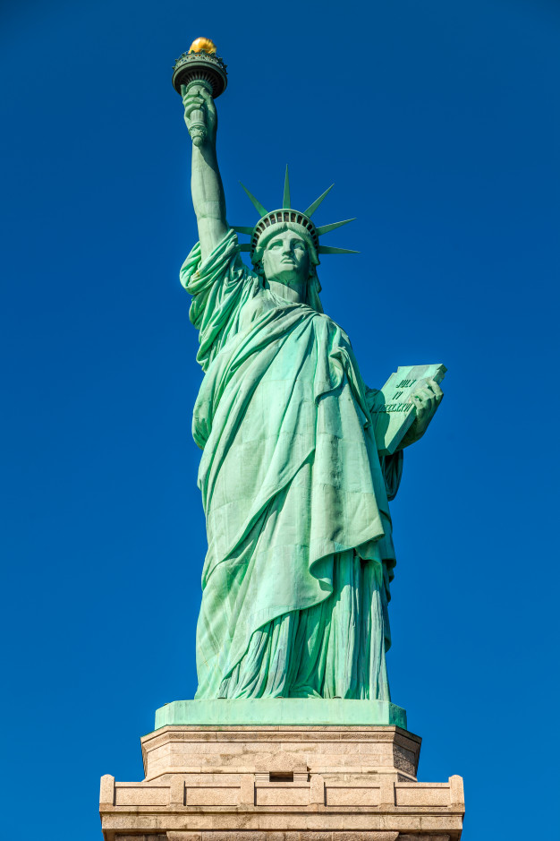
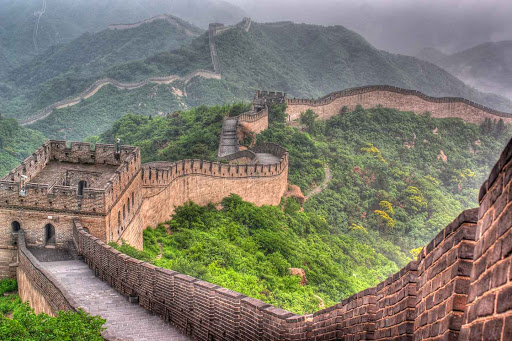
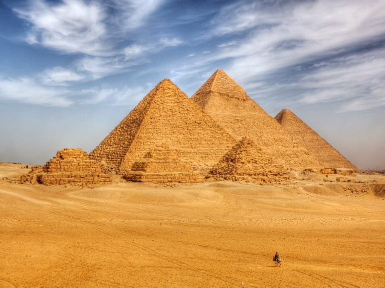

The Taj Mahal

The Taj Mahal 'Crown of the Palace', originally the Rauza-i-munawwara is an ivory-white marble mausoleum on the southern bank of the river Yamuna in the Indian city of Agra. It was commissioned in 1632 by the Mughal emperor Shah Jahan (reigned from 1628 to 1658) to house the tomb of his favourite wife, Mumtaz Mahal; it also houses the tomb of Shah Jahan himself. The tomb is the centrepiece of a 17-hectare (42-acre) complex, which includes a mosque and a guest house, and is set in formal gardens bounded on three sides by a crenellated wall.
Statue of liberty
The Statue of Liberty (Liberty Enlightening the World; French: La Liberté éclairant le monde) is a colossal neoclassical sculpture on Liberty Island in New York Harbor within New York City, in the United States. The copper statue, a gift from the people of France to the people of the United States, was designed by French sculptor Frédéric Auguste Bartholdi and its metal framework was built by Gustave Eiffel. The statue was dedicated on October 28, 1886.
The eiffel tower

The Eiffel Tower is a wrought-iron lattice tower on the Champ de Mars in Paris, France. It is named after the engineer Gustave Eiffel, whose company designed and built the tower. Locally nicknamed "La dame de fer" (French for "Iron Lady"), it was constructed from 1887 to 1889 as the entrance to the 1889 World's Fair and was initially criticised by some of France's leading artists and intellectuals for its design, but it has become a global cultural icon of France and one of the most recognisable structures in the world. The Eiffel Tower is the most-visited paid monument in the world; 6.91 million people ascended it in 2015.
Qutub minar

The Qutb Minar, also spelled as Qutub Minar and Qutab Minar, is a minaret and "victory tower" that forms part of the Qutb complex. It is a UNESCO World Heritage Site in the Mehrauli area of New Delhi, India. It is one of most visited tourist spots in the city due to it being one of the earliest that survives in the Indian subcontinent. It can be compared to the 62-metre all-brick Minaret of Jam in Afghanistan, of c.1190, which was constructed a decade or so before the probable start of the Delhi tower. The surfaces of both are elaborately decorated with inscriptions and geometric patterns. The Qutb Minar has a shaft that is fluted with "superb stalactite bracketing under the balconies" at the top of each stage. In general, minarets were slow to be used in India and are often detached from the main mosque where they exist.[11]
The great wall of China
The Great Wall of China is a series of fortifications that were built across the historical northern borders of ancient Chinese states and Imperial China as protection against various nomadic groups from the Eurasian Steppe. Several walls were built from as early as the 7th century BC,[2] with selective stretches later joined together by Qin Shi Huang (220–206 BC), the first emperor of China. Little of the Qin wall remains.[3] Later on, many successive dynasties built and maintained multiple stretches of border walls. The most well-known sections of the wall were built by the Ming dynasty (1368–1644).
The great pyramid of Giza
The Great Pyramid of Giza (also known as the Pyramid of Khufu or the Pyramid of Cheops) is the oldest and largest of the pyramids in the Giza pyramid complex bordering present-day Giza in Greater Cairo, Egypt. It is the oldest of the Seven Wonders of the Ancient World, and the only one to remain largely intact. Egyptologists conclude that the pyramid was built as a tomb for the Fourth Dynasty Egyptian pharaoh Khufu and estimate that it was built in the 26th century BC during a period of around 27 years.